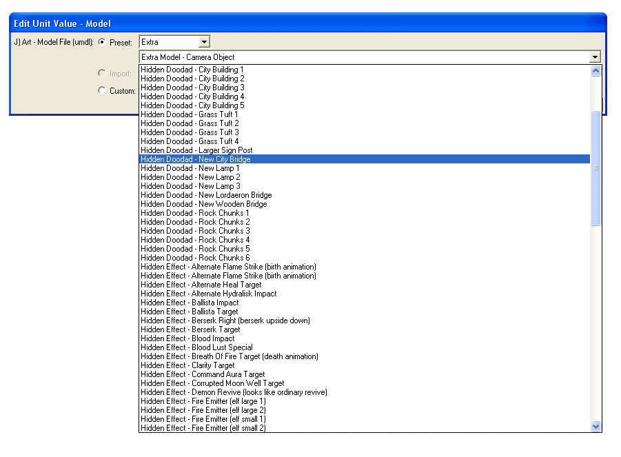

UMSWE basically adds all the missing content and functions to the World Editor that Blizzard forgot or didn't manage to add. Version 5 of UMSWE is now integrated into Grimoire/Jass NewGen and the changes are dynamically applied to your data files. This means that it's now independent of your language and the Warcraft patch that you are using. Now here's a list of the most important changes to the World Editor.
The core features of UMSWE are enabled by checking the UMSWE\Enable UMSWE menu option. Enabling this option can take several seconds because many changes have to be applied. After enabling/disabling an UMSWE option or making changes in an UMSWE configuratin dialog, the editor must be restarted to have them applied. You will notice that UMSWE is enabled if the startup logo of the World Editor changes to the UMSWE logo. For all the optional features this core option must be enabled.
The max width and height for new maps is increased to 480 and the max and min terrain height is also increased. Additionally it's now possible to create steep hills with the raise/lower tool of the editor, so that you can create cliffs without using the cliff tool.
All additional fields for the Game Interface configuration dialog that were part of the Game Interface Project are now included in UMSWE. This means that you can now edit Tooltips, Hotkeys and Icons of general commands like move, patrol, stop, hold position, cancel and so on. Chat recipients and the fonts used by the game can now also be edited in the Game Interface configuration.
The upper and lower bounds for many values in the object editor have been adjusted to better represent the actual bounds. It was always possible to override the bounds by shift-clicking the property in question, but is still useful as a guide to know which values will actually work ingame. Furthermore fields that are normally only available for buildings like units trained, researches available, items sold, etc. are now also available for units and heros. The type of the 'Destructable Created' field of the Volcano ability is changed to string, so that it won't display the unitpicker.
This screenshot shows the 'Return Success' functions and the 'Custom Script' option for boolean parameters:
All the hidden models and hidden icons are added to the editor by UMSWE.
You can find them in the 'Extra' section of the mdl and blp selection dropdown.
Also hidden abilities like Move, Attack, and Hero and hidden units are now shown in the object editor.

UMSWE allows to change the order of the categories in the object editor, gameplay constants dialog and game interface dialog like WEU used to.
Contrary to WEU, however, it's possible to customize the prefixes of the categories to change their order to your liking. This image shows the configuration dialog that can be opend via the menu command UMSWE\Customize Editor Categories:
Finally to have your custom categories applied you must check the UMSWE\Custom Editor Categories menu option and restart the editor. Assuming the UMSWE core option is also enabled your changes will then be applied:
You can modify the buildability, walkability and flyability of each tile in a GUI that can be started via the UMSWE\Customize Tile Pathability menu command:
After restarting the editor the changes will be applied if the UMSWE\Custom Tile Pathability menu option and the UMSWE core options are enabled.
Whenever you save a map, the editor will then generate the pathing map for it according to your configuration. There's a known issue, that disabled flyability automatically disables buildability for the same tile. A workaround is using the Grimex PathMapper tool to enable buildability for those tiles.
With the UMSWE\Non Tileset Specific Objects menu option enabled, all creeps and destructables will be made available for all tilesets. After toggling this option you need to restart the editor to apply the changes.
There are several people who worked on the original UMSWE and other related tools:
Have fun, PitzerMike